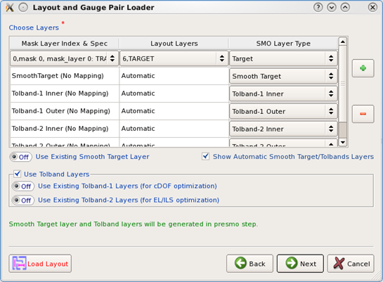
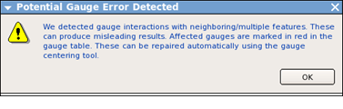
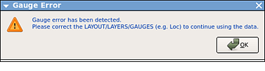
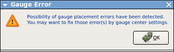
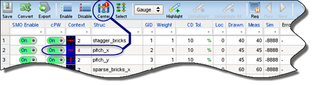
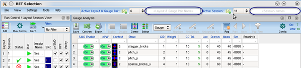

The RET Selection
interface automates communication between the point tools you use
in an optimization run. This means the first step is to define the parts
shared by the tools: layout, gauges, and models.
Restrictions and Limitations
For models, only litho models
are supported. If you have traditional models (separate resist,
optical, and so on), see “Lithomodel Creation Wizard User’s Guide” in the Calibre
WORKbench User’s and Reference Manual for instructions on
turning your traditional models into a litho model.
For DDM models specifically, only universal DDM models are supported.
The run exits with an error if you provide DDM models with “modeltype
ready” or fewer than 126 signals. See “3D Mask Modeling With DDM and HHA” in the Calibre WORKbench
User’s and Reference Manual for instructions on creating
a universal DDM model.
For gauges, only gauge data
object files (.gg) and super
gauge files (.sgd) are supported. Specifically,
you cannot use drawn gauges, sample spreadsheet files (.ss),
or super spreadsheet files (.sss).
If your gauges are not in gauge data object format, see “Methods for Creation of Gauge Data Objects” in the Calibre WORKbench User’s and Reference Manual.
Prerequisites
A
layout in GDS or OASIS®1 format with test patterns laid out with space
between.
A
gauge file (.gg or .sgd) that
is based on the shapes in the layout file.
A
litho model containing at a minimum a resist model and an initial
optical model. It may also contain DDM, VEB, and other advanced
process models.
Video
The video series “How to Use CDOF and EL/ILS Optimization” describes
and demonstrates the main functionality and key workflow steps for
using CDOF or EL optimization in a Free-Form pxSMO session.
The “Overview”
video describes the main functionality and key workflow steps for
using CDOF or EL optimization.
The “Demonstration:
Creating Tolerance Bands” video demonstrates the creation and mapping
of tolerance bands in the Layout/Gauge Pair step.
Procedure
In the RET Selection window,
select File > Create
Layout & Gauge Pair.
The Layout and Gauge Pair Loader
wizard opens.
In the
Layout and Gauge Pair Loader wizard, add the layout file and the
gauge file.
Click the + button to open the Layout File and
Gauges File Selector. Use the browse button (…) to open a file. Click OK, then Next.
To add multiple layout and gauge pairs, the following
additional steps are required:
Specify the input layers from each layout.
Specify the names of the merged layout and gauge files.
Specify the starting layer number of the merged layout.
Select Lithomodel and click Next. Browse or enter the path
to the litho model and click Next again.
You may see a message displayed while the information is read.
If you select Setup File instead of Lithomodel, you
will need a RET Selection setup file. It is described in “Setup File Format for RET Selection”.
Map the
mask layers to the layout layers and specify a type.

The fields expand to a list of choices when clicked.
Specify
the layout layer that corresponds to the litho model’s target layer
by selecting the layout layer with the ideal shapes and set the
SMO Layer Type to Target.
(Optional)
Specify an existing smoothed target.
Click + and
select Smooth Target for the SMO Layer Type.
Set Use Existing
Smooth Target Layer to On, and map an existing layer under Layout
Layers.
(Optional)
When running CDOF or EL/ILS optimization with existing tolerance
bands, add the number of tolerance required by the optimization.
Note:
Tolband layers and weight layers are mutually exclusive
in the pxSMO step. Weight layers are unavailable for CDOF and EL/ILS optimization.
When running
CDOF optimization, add one pair of inner and outer tolerance band
layers. Click + two times and select Tolband‑1
Inner and Tolband‑1 Outer for the SMO Layer Type.
When running
EL/ILS optimization, add two pairs of inner and outer tolerance
band layers. Click + four times and select
Tolband‑1 Inner, Tolband‑1 Outer, Tolband‑2 Inner, and Tolband‑2
Outer for the SMO Layer Type.
Select Use Tolband Layers. Activate a Use Existing Tolband Layer
option and map the corresponding layers in Layout Layers.
(Optional)
Specify a marker layer to emphasize some sections of the layout
over others.
Before mapping a marker layer, the marker layer
must already exist in the layout file. To add a marker layer, click + and
select Marker for the SMO Layer Type. Select
the marker layer in the layout file for the layout layer.
(Optional) Specify a correction layer if anchoring
to a gauge.
Before mapping
a correction layer, the correction layer must already exist in the
layout file. To add a correction layer, click + and
select Correction for
the SMO Layer Type. Select the correction layer in the layout file
for the layout layer.
(Optional)
Specify a weight layer to emphasize some sections of the layout
over others.
Before mapping a weight layer, the weight layer
must already exist in the layout file. To add a weight layer, click + and
select Weight for the SMO Layer Type. Select
the weight layer in the layout file for the layout layer.
When
all layers are mapped, click Next.
Specify
a name for the RET Selection setup file. The file is written to the
working directory unless you browse to a different one. Click Next.
Note:
The setup file settings can be reused in a future
run by selecting a setup file instead of a Lithomodel in Step 3. Calibre file browsers
filter for .in files when loading setup files. However,
the Layout and Gauge Pair Loader does not automatically add the .in suffix.
Review the list of settings
that the Layout and Gauge Pair Loader displays, and click OK if you do not want to make
any changes.
Tip
You can
name the layout and session at this stage to more easily identify
them later.
The RET Selection window checks the inputs while creating the
new Layout/Gauge pair. If it detects problems, you may get a message
like the ones shown.



The Calibre WORKbench and RET
Selection windows update to show the gauge set and layout you specified.
If you
were shown a message about gauge errors, you can often correct them
in the Gauge Analysis pane.
If
you are viewing the Session Browser, click Gauges to
switch to the Gauge Analysis pane.
If
the gauge placement and type (loc column in the gauge file) are
inconsistent, a message is shown in the ErrorInfo column for the
gauge. In this case, you must edit the gauge file to fix the error and
then restart this procedure. A layout/gauge pair cannot reload a
gauge file once the layout/gauge pair is in the database.
If there are
gauges with red numbers in the Context column, Calibre has detected
that they are interacting with multiple features in the layout.
Figure 1. Gauge
Context Errors

Hover
over the small image next to the number to see a larger image.
Click
the Center button in the Gauge Analysis toolbar
to open the Gauges Center Setup dialog box.
To fix
gauges that are slightly interacting with nearby features, in the Guard
Bands tab unselect Use Default. Reduce the Length and
Width values and then click Apply.
To fix
gauges that are too long or not centered on their edges, in the Gauges
Center tab adjust the Factor if necessary and click Apply.
Dismiss
the dialog box by clicking OK.
If some of the gauges still show an error, you may
need to adjust the gauge file with an ASCII editor or by creating
new gauges in the layout. A layout/gauge pair cannot reload a gauge
file once the layout/gauge pair is in the database; you will need
to restart this procedure with the improved gauge file.
In the RET Selection window,
name your layout/gauge pair and session. This step is not required
but is recommended so that later, when you have many layout/gauge
pairs, it will aid recall.

In the
Run Control/Layout Session View on the left, click in the row with
the green arrow. This selects the session, and populates the Session Browser tab.
Results
The RET Selection window displays
at least one layout/gauge pair and one session. The Calibre WORKbench
main area shows the layout you loaded. No tools have been configured yet.
If you are satisfied with your setup,
continue to “Define a Session.”
1 OASIS® is
a registered trademark of Thomas Grebinski and licensed for use
to SEMI®, San Jose. SEMI® is
a registered trademark of Semiconductor Equipment and Materials
International.